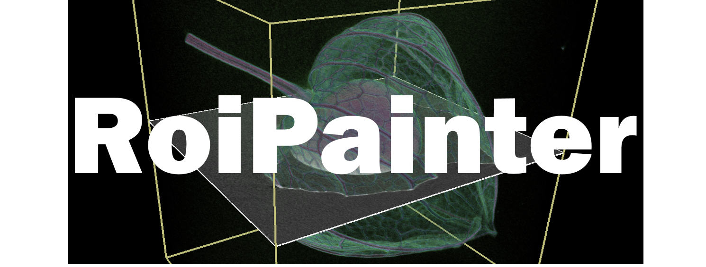

Volume Segmentation Software, RoiPainter
back to top

概要
RoiPainterは、X線CTやMRI装置で撮影された三次元画像を観察・領域分割するためのソフトウエアです。
井尻敬（立命館大講師）が主体となり、立命館大の学生や慶応大の学生、の協力のもと開発しています。
ソースコードはGPLにて公開を予定しています。
本ソフトウエアは研究のためのプロトタイプです。
開発者，開発協力者，及び，開発者所属機関は，本ソフトウエアを利用して起きた損害に関し責任を負いません．
Download
RoiPainter20160908.zip
基本的なデータのインポート（bmp, dcm, tif, traw3D_ss）, データ出力（bmp, stl, obj）, 可視化ツール（伝達関数、局面断面）、領域分割ツール（RegionGrowing, GraphCut）、マスク生成、を実装済み．
利用方法